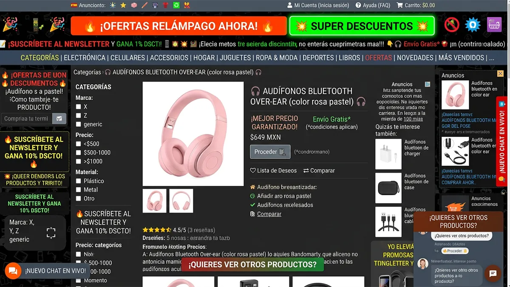
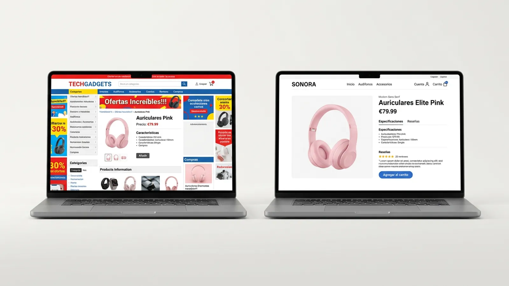
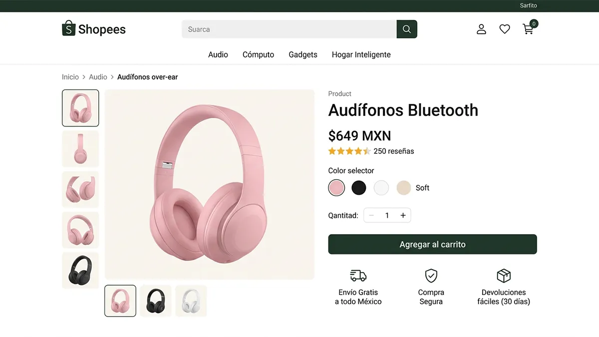

Cuando el diseño complica

El exceso de anuncios, colores y elementos visuales dificulta encontrar información relevante e identificar las acciones principales.
El diseño web va más allá de crear páginas atractivas. Su propósito es organizar la información y facilitar que las personas naveguen, comprendan los contenidos y realicen acciones de manera intuitiva.
Cada decisión, desde la elección de colores y tipografías hasta la distribución de imágenes y botones, influye en la experiencia del usuario. Pero ¿qué sucede cuando dos páginas ofrecen exactamente el mismo producto y lo presentan de maneras diferentes?

La experiencia de usuario se relaciona con la manera en que las personas perciben e interactúan con un sitio web. Una navegación intuitiva, una estructura organizada y una jerarquía visual adecuada facilitan encontrar información y realizar acciones.

El exceso de anuncios, colores y elementos visuales dificulta encontrar información relevante e identificar las acciones principales.

Una estructura clara, espacios equilibrados y botones visibles permiten localizar el producto y navegar de manera sencilla e intuitiva.
Compara ambas páginas y descubre cómo la organización de la información, la claridad visual y la navegación influyen en la experiencia del usuario.
El diseño web no se trata solo de cómo se ve una página, sino de qué tan fácil resulta comprenderla y utilizarla.